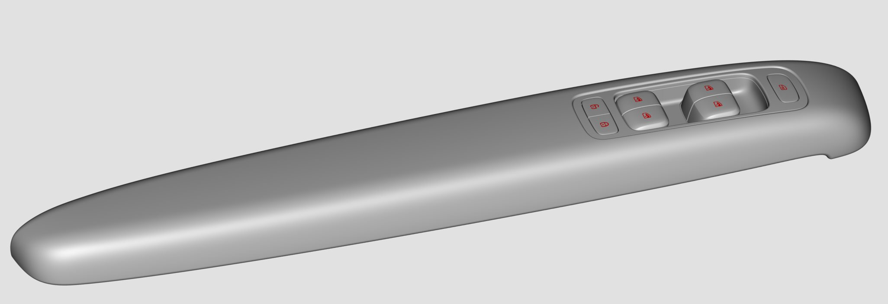
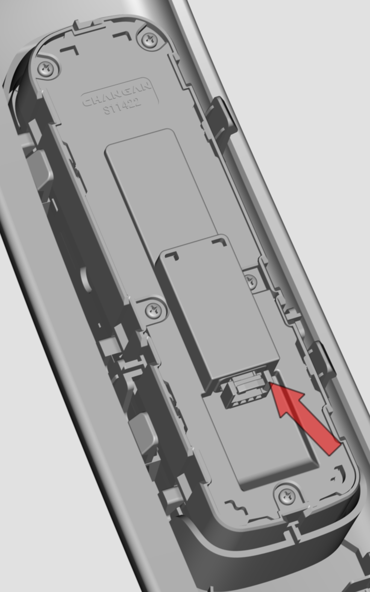
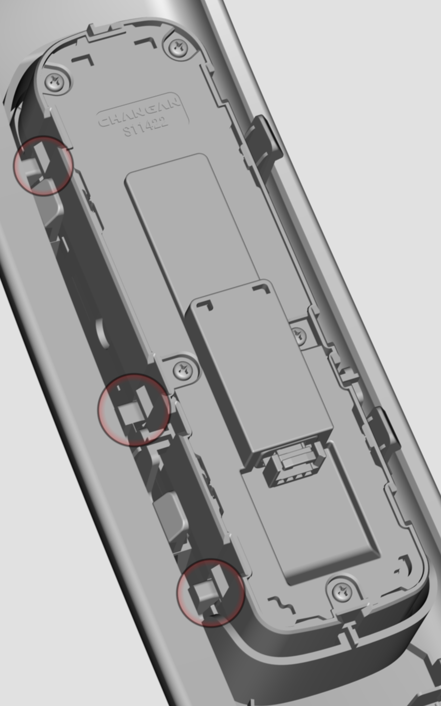
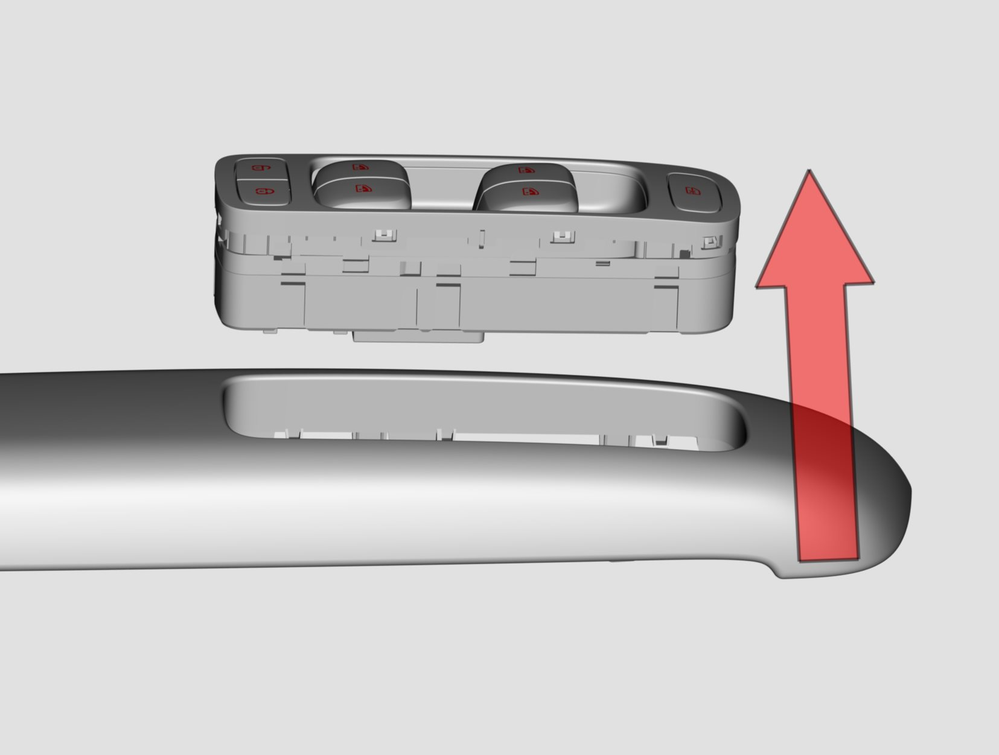
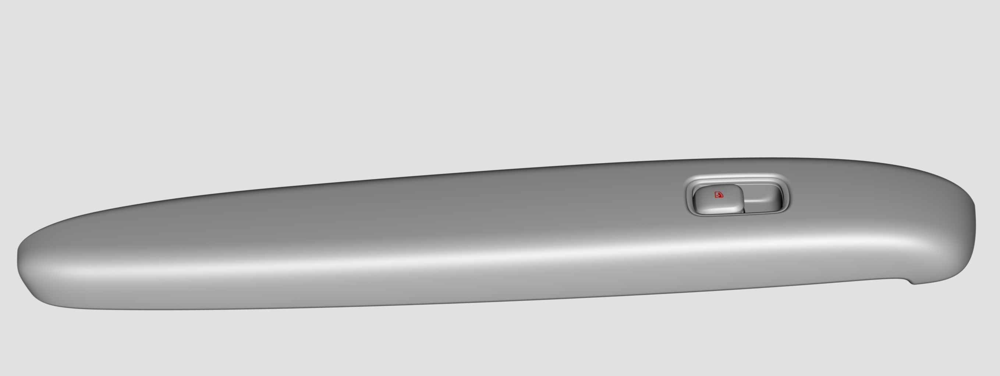
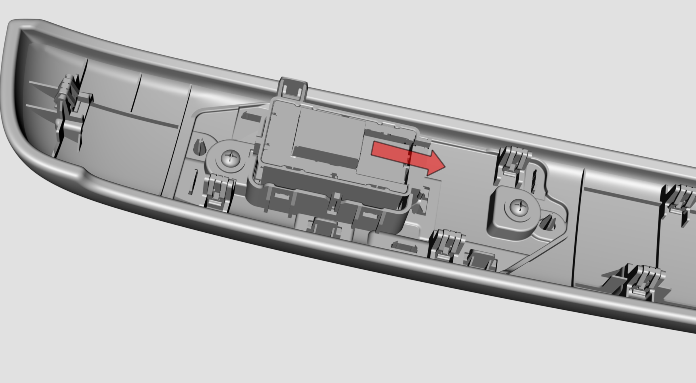
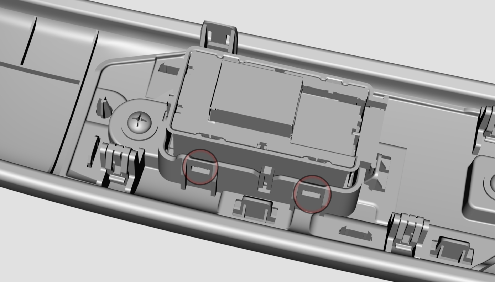
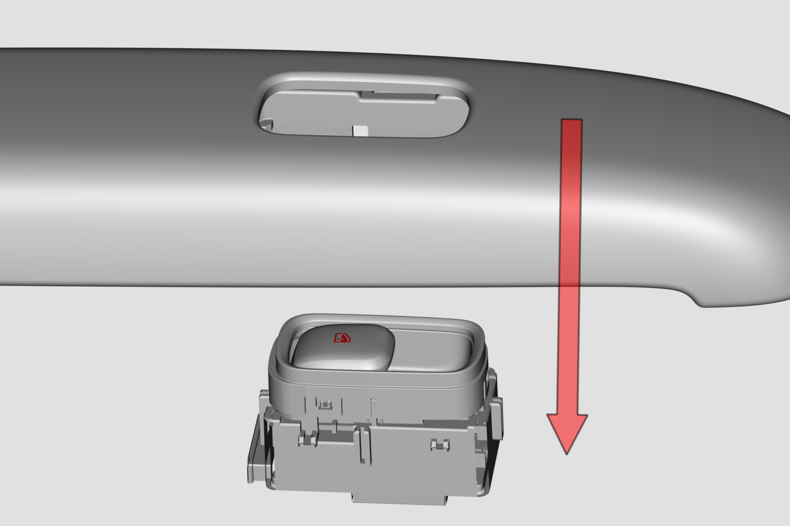

Снятие и установка
Метод Снятие и Установка переключателя стеклоподъемников водителя.
Перед Снятие переключателя стеклоподъемников необходимо сначала снять панель подлокотника, подробнее см. главу Снятие и установка облицовочной панели передней двери;

Отсоединить разъем;

С помощью съемника фиксаторов ослабить фиксаторы между переключателем стеклоподъемников и панелью подлокотника (расположение левого и правого фиксаторов симметрично, всего 6 шт.), демонтировать переключатель стеклоподъемников с лицевой стороны подлокотника;


Установка выполняется в порядке, обратном снятию.
Метод Снятие и Установка переключателя стеклоподъемников переднего пассажира.
Перед Снятие переключателя стеклоподъемников необходимо сначала снять панель подлокотника, подробнее см. главу Снятие и установка облицовочной панели передней двери;

Отсоединить разъем;

С помощью съемника фиксаторов ослабить фиксаторы между переключателем стеклоподъемников и панелью подлокотника (расположение левого и правого фиксаторов симметрично, всего 4 шт.), демонтировать переключатель стеклоподъемников со стороны нижней части подлокотника;


Установка выполняется в порядке, обратном снятию.